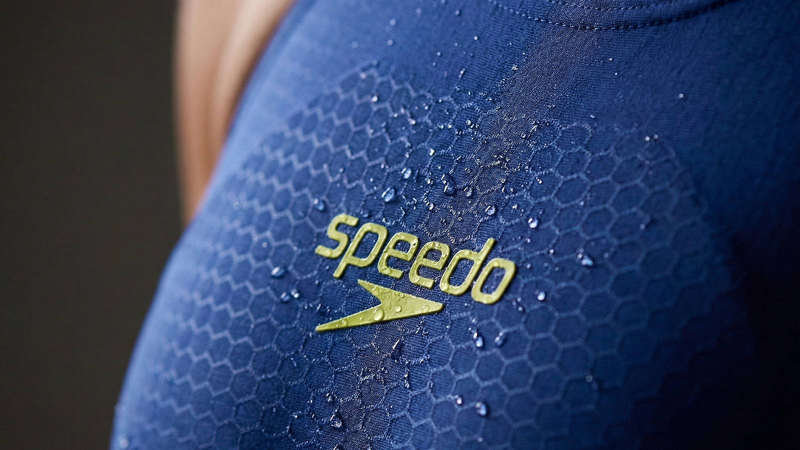
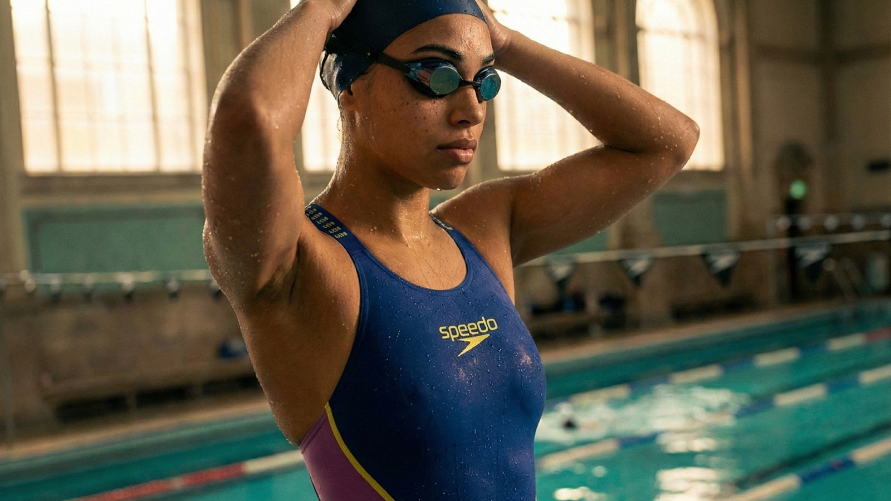
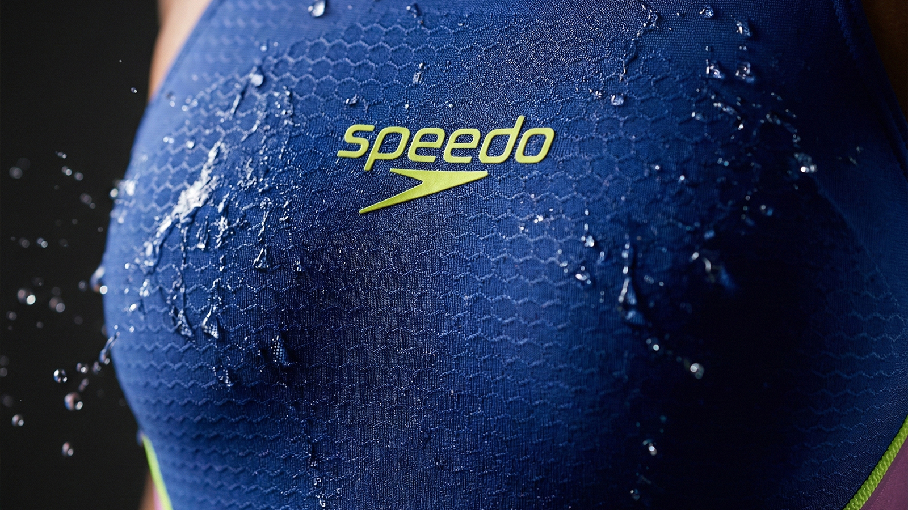
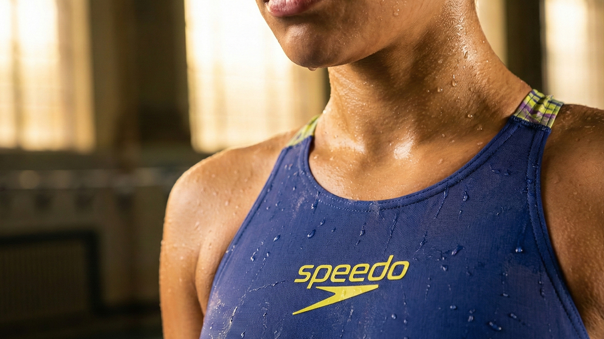
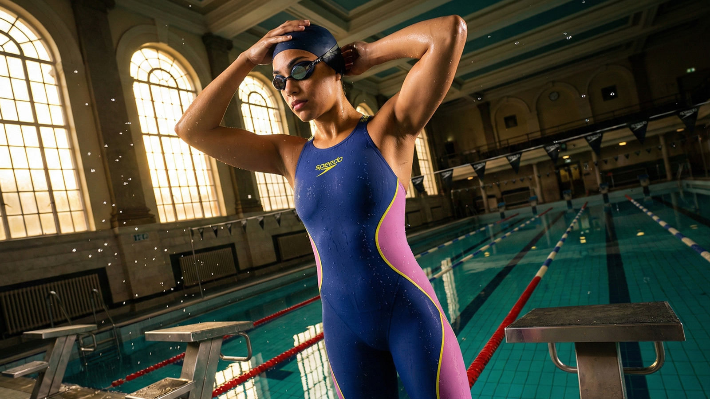
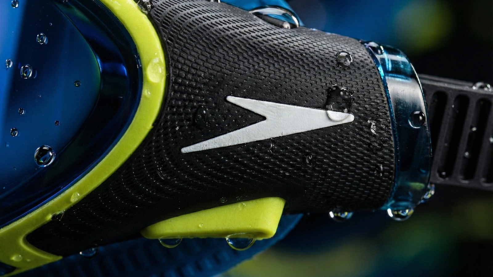
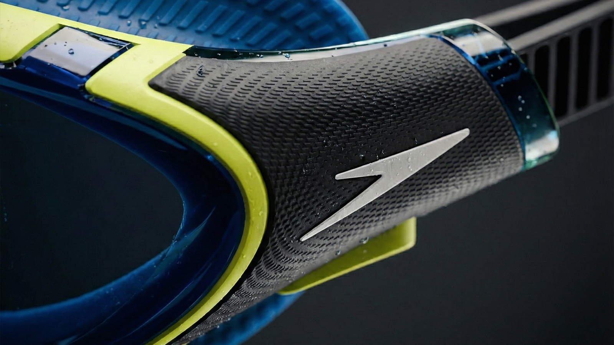
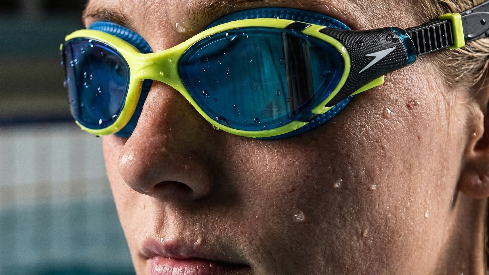
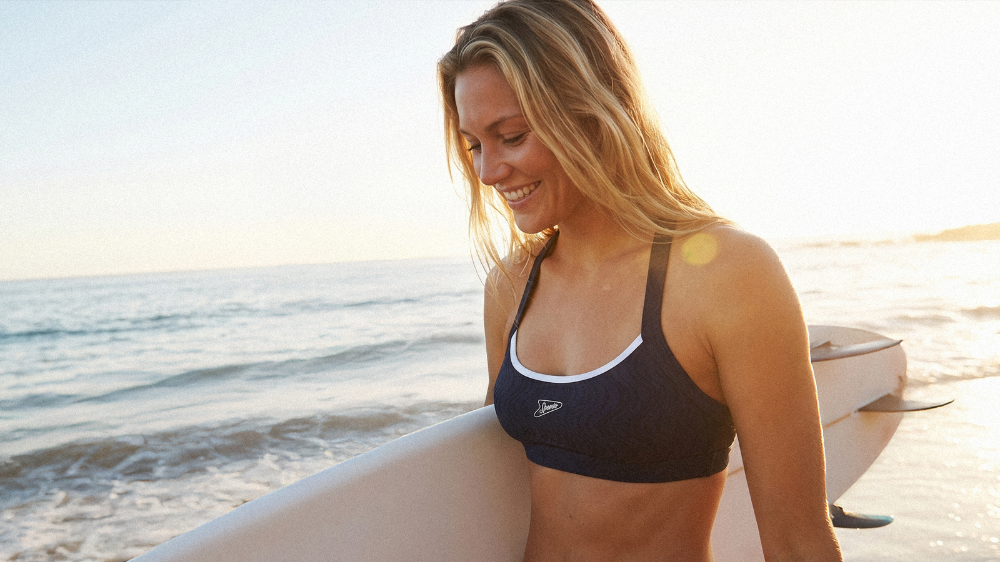
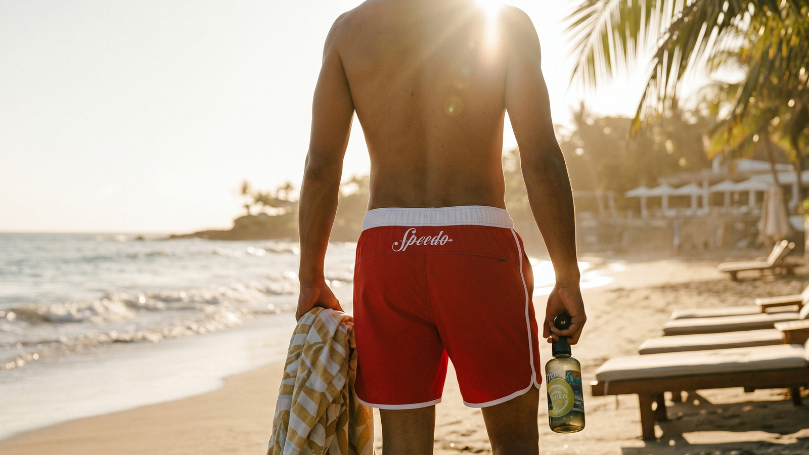

This self-initiated project was a direct reaction to the need for new lifestyle photographic assets for a new range of suits developed by the Speedo team. I had the CAD drawings for each suit but no way of bringing them to life online.


There was no brief here… but I wanted to explore how Ai-driven image generation could be used to create high-impact campaign visuals – fast, flexible, and at a fraction of traditional production costs. The challenge was to push the technology beyond generic outputs and produce something that genuinely felt like the Speedo brand: dynamic, precise, and performance-led.



Launched as a purely experimental process, I steered the Ai outputs through an iterative prompting and refinement process. Every image was guided, shaped, and carefully selected to ensure it held up against Speedo's brand standards. The work sits at the intersection of creative instinct and technical possibility.





During a time when we were falling behind on embracing Ai image generation, I very much wanted to grasp the nettle and show how we can turn this new technology to our advantage. This initiative was an early indication of what was going to be possible using Ai-driven workflows. There may be some flaws on show here, but this served as a small glimpse into the future of image manipulation and content creation.